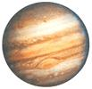
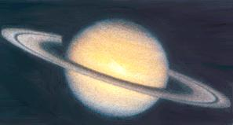

This photo of Jupiter (left) is dominated by the Great Red Spot - an atmospheric system larger than the earth and more than 300 yeas old. Saturn (right) is experiencing a rare storm in this picture - it appears as a white, arrowhead-shaped feature near the planet's equator.
Yet even Jupiter is only half as wide as the span of the very thin (when seen edge-on), 170,000-miles-broad rings of Saturn - the most beautiful large-scale structure in the solar system.
All of these facts about Jupiter and Saturn are interesting, but this fall and winter they can take on some added significance: You can see both of these planets at just about their closest, biggest and brightest possible.
To the unaided eye, Saturn and Jupiter appear as bright, steady (not twinkling) points of light. In October they rise around mid-evening. By the second half of November they both reach opposition to the sun in the sky and appear as soon as darkness starts to fall. Jupiter rises soon after Saturn and is by far the brightest object in the east, and won't be quite this bright again for about a decade. Saturn hasn't been this bright since 1975. What's more, the two planets currently travel across the sky near two lovely star clusters - the Pleiades, or Seven Sisters Cluster (near Saturn), and the Hyades Cluster (near Jupiter). Accompanying the Hyades is the bright orange star Aldebaran, which marks the eye of Taurus the Bull.
Of course, everyone wants to see Jupiter and Saturn through telescopes. Even small telescopes can reveal a few dark bands across the face of Jupiter and show the rings of Saturn, which are tiny but perfect. The rings of Saturn are now tilted generously our way.
Suppose, however, that you don't yet own a telescope, or want to get a better one. The gift-giving season is not far off, and Jupiter and Saturn will still look nice and big in December and January. But how do you decide? Where should you buy one? My advice is to suggest that you direct those questions to members of one of your nearest amateur astronomy clubs. You can find a huge listing of these clubs and their addresses at www.skypub.com
|
 |
 |
|